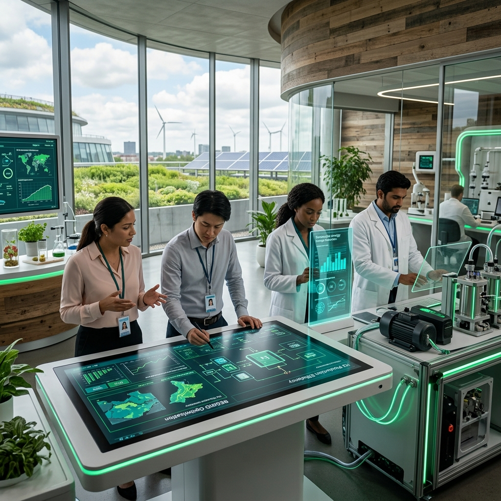

Building Solutions for People and Planet
The Institute for Sustainable Technology and Societal Development (ISTSD) is a multidisciplinary platform dedicated to research, innovation, technology development, and societal transformation.
We bring together researchers, technologists, educators, entrepreneurs, policymakers, institutions, and communities to develop practical solutions for emerging environmental and societal challenges.
Our focus spans digital transformation, green energy integration, ecological mapping, and smart education delivery to foster sustainable local economies. By anchoring research in field observations, we ensure that technological progress goes hand-in-hand with human dignity and community empowerment.
